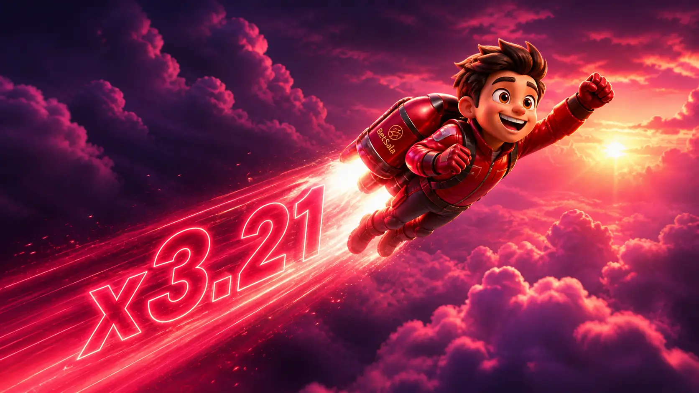

Multiplicador
Sube hasta que la ronda termina.
Ver másAntes de hacer tu primera ronda en Aviator, conviene aceptar dos cosas: el corte del multiplicador es completamente aleatorio y cada ronda es independiente de la anterior. La estrategia trabaja sobre presupuesto, no sobre patrones.

El interés por BetSala Aviator suele venir de usuarios que buscan juegos de multiplicador o formato crash. En ese tipo de mecánica, cada ronda puede terminar de forma repentina, por eso el retiro manual o automático debe planificarse antes, no durante el impulso.
La página evita promesas sobre estrategias infalibles. Trabaja términos como Aviator Chile, juego crash y multiplicador online desde una perspectiva informativa, conectando con otros juegos rápidos como Lucky Jet y Mines.
Ver Lucky Jet
Antes de avanzar, usa esta lista como filtro práctico para evitar decisiones apresuradas.

Resumen para evaluar intención, condiciones y próximos pasos.
| Aspecto | Qué mirar | Por qué importa |
|---|---|---|
| Ronda | Inicio rápido y final impredecible | Requiere atención constante |
| Retiro | Momento en que se cierra la jugada | Define si la ronda termina con saldo o pérdida |
| Riesgo | Velocidad y repetición | Puede impulsar decisiones emocionales |
| Control | Límites previos | Ayuda a cortar la sesión a tiempo |
Enlaces internos para continuar por la intención correcta dentro del sitio.
Es una búsqueda asociada a un juego tipo crash, donde el multiplicador sube hasta que la ronda termina.
No. No existe método seguro para predecir resultados. Solo se puede controlar monto, tiempo y salida.
Una función que permite cerrar la jugada al llegar a un punto definido, si la ronda lo permite.
Lucky Jet y algunos juegos instantáneos tienen ritmo rápido, aunque cada uno funciona de manera distinta.